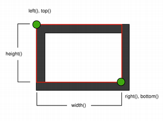
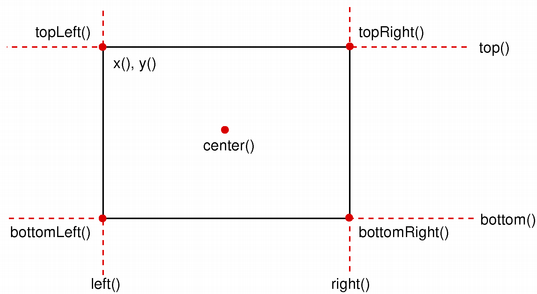

QRectF Class
The QRectF class defines a finite rectangle in the plane using floating point precision. More...
| Header: | #include <QRectF> |
| CMake: | find_package(Qt6 REQUIRED COMPONENTS Core) target_link_libraries(mytarget PRIVATE Qt6::Core) |
| qmake: | QT += core |
- List of all members, including inherited members
- QRectF is part of Painting Classes.
Note: All functions in this class are reentrant.
Public Functions
| QRectF() | |
| QRectF(const QPointF &topLeft, const QSizeF &size) | |
| QRectF(const QPointF &topLeft, const QPointF &bottomRight) | |
| QRectF(qreal x, qreal y, qreal width, qreal height) | |
| QRectF(const QRect &rectangle) | |
| void | adjust(qreal dx1, qreal dy1, qreal dx2, qreal dy2) |
| QRectF | adjusted(qreal dx1, qreal dy1, qreal dx2, qreal dy2) const |
| qreal | bottom() const |
| QPointF | bottomLeft() const |
| QPointF | bottomRight() const |
| QPointF | center() const |
| bool | contains(const QPointF &point) const |
| bool | contains(const QRectF &rectangle) const |
| bool | contains(qreal x, qreal y) const |
| void | getCoords(qreal *x1, qreal *y1, qreal *x2, qreal *y2) const |
| void | getRect(qreal *x, qreal *y, qreal *width, qreal *height) const |
| qreal | height() const |
| QRectF | intersected(const QRectF &rectangle) const |
| bool | intersects(const QRectF &rectangle) const |
| bool | isEmpty() const |
| bool | isNull() const |
| bool | isValid() const |
| qreal | left() const |
| QRectF | marginsAdded(const QMarginsF &margins) const |
| QRectF | marginsRemoved(const QMarginsF &margins) const |
| void | moveBottom(qreal y) |
| void | moveBottomLeft(const QPointF &position) |
| void | moveBottomRight(const QPointF &position) |
| void | moveCenter(const QPointF &position) |
| void | moveLeft(qreal x) |
| void | moveRight(qreal x) |
| void | moveTo(qreal x, qreal y) |
| void | moveTo(const QPointF &position) |
| void | moveTop(qreal y) |
| void | moveTopLeft(const QPointF &position) |
| void | moveTopRight(const QPointF &position) |
| QRectF | normalized() const |
| qreal | right() const |
| void | setBottom(qreal y) |
| void | setBottomLeft(const QPointF &position) |
| void | setBottomRight(const QPointF &position) |
| void | setCoords(qreal x1, qreal y1, qreal x2, qreal y2) |
| void | setHeight(qreal height) |
| void | setLeft(qreal x) |
| void | setRect(qreal x, qreal y, qreal width, qreal height) |
| void | setRight(qreal x) |
| void | setSize(const QSizeF &size) |
| void | setTop(qreal y) |
| void | setTopLeft(const QPointF &position) |
| void | setTopRight(const QPointF &position) |
| void | setWidth(qreal width) |
| void | setX(qreal x) |
| void | setY(qreal y) |
| QSizeF | size() const |
| QRect | toAlignedRect() const |
| CGRect | toCGRect() const |
(since 6.5) emscripten::val | toDOMRect() const |
| QRect | toRect() const |
| qreal | top() const |
| QPointF | topLeft() const |
| QPointF | topRight() const |
| void | translate(qreal dx, qreal dy) |
| void | translate(const QPointF &offset) |
| QRectF | translated(qreal dx, qreal dy) const |
| QRectF | translated(const QPointF &offset) const |
| QRectF | transposed() const |
| QRectF | united(const QRectF &rectangle) const |
| qreal | width() const |
| qreal | x() const |
| qreal | y() const |
| QRectF | operator&(const QRectF &rectangle) const |
| QRectF & | operator&=(const QRectF &rectangle) |
| QRectF & | operator+=(const QMarginsF &margins) |
| QRectF & | operator-=(const QMarginsF &margins) |
| QRectF | operator|(const QRectF &rectangle) const |
| QRectF & | operator|=(const QRectF &rectangle) |
Static Public Members
| QRectF | fromCGRect(CGRect rect) |
(since 6.5) QRectF | fromDOMRect(emscripten::val domRect) |
Related Non-Members
| bool | operator!=(const QRectF &r1, const QRectF &r2) |
| QRectF | operator+(const QRectF &lhs, const QMarginsF &rhs) |
| QRectF | operator+(const QMarginsF &lhs, const QRectF &rhs) |
| QRectF | operator-(const QRectF &lhs, const QMarginsF &rhs) |
| QDataStream & | operator<<(QDataStream &stream, const QRectF &rectangle) |
| bool | operator==(const QRectF &r1, const QRectF &r2) |
| QDataStream & | operator>>(QDataStream &stream, QRectF &rectangle) |
Detailed Description
A rectangle is normally expressed as a top-left corner and a size. The size (width and height) of a QRectF is always equivalent to the mathematical rectangle that forms the basis for its rendering.
A QRectF can be constructed with a set of left, top, width and height coordinates, or from a QPointF and a QSizeF. The following code creates two identical rectangles.
QRectF r1(100.0, 200.1, 11.2, 16.3); QRectF r2(QPointF(100.0, 200.1), QSizeF(11.2, 16.3));
There is also a third constructor creating a QRectF from a QRect, and a corresponding toRect() function that returns a QRect object based on the values of this rectangle (note that the coordinates in the returned rectangle are rounded to the nearest integer).
The QRectF class provides a collection of functions that return the various rectangle coordinates, and enable manipulation of these. QRectF also provides functions to move the rectangle relative to the various coordinates. In addition there is a moveTo() function that moves the rectangle, leaving its top left corner at the given coordinates. Alternatively, the translate() function moves the rectangle the given offset relative to the current position, and the translated() function returns a translated copy of this rectangle.
The size() function returns the rectangle's dimensions as a QSizeF. The dimensions can also be retrieved separately using the width() and height() functions. To manipulate the dimensions use the setSize(), setWidth() or setHeight() functions. Alternatively, the size can be changed by applying either of the functions setting the rectangle coordinates, for example, setBottom() or setRight().
The contains() function tells whether a given point is inside the rectangle or not, and the intersects() function returns true if this rectangle intersects with a given rectangle (otherwise false). The QRectF class also provides the intersected() function which returns the intersection rectangle, and the united() function which returns the rectangle that encloses the given rectangle and this:
The isEmpty() function returns true if the rectangle's width or height is less than, or equal to, 0. Note that an empty rectangle is not valid: The isValid() function returns true if both width and height is larger than 0. A null rectangle (isNull() == true) on the other hand, has both width and height set to 0.
Note that due to the way QRect and QRectF are defined, an empty QRectF is defined in essentially the same way as QRect.
Finally, QRectF objects can be streamed as well as compared.
Rendering
When using an anti-aliased painter, the boundary line of a QRectF will be rendered symmetrically on both sides of the mathematical rectangle's boundary line. But when using an aliased painter (the default) other rules apply.
Then, when rendering with a one pixel wide pen the QRectF's boundary line will be rendered to the right and below the mathematical rectangle's boundary line.
When rendering with a two pixels wide pen the boundary line will be split in the middle by the mathematical rectangle. This will be the case whenever the pen is set to an even number of pixels, while rendering with a pen with an odd number of pixels, the spare pixel will be rendered to the right and below the mathematical rectangle as in the one pixel case.
 |  |
| Logical representation | One pixel wide pen |
 |  |
| Two pixel wide pen | Three pixel wide pen |
Coordinates
The QRectF class provides a collection of functions that return the various rectangle coordinates, and enable manipulation of these. QRectF also provides functions to move the rectangle relative to the various coordinates.
For example: the bottom(), setBottom() and moveBottom() functions: bottom() returns the y-coordinate of the rectangle's bottom edge, setBottom() sets the bottom edge of the rectangle to the given y coordinate (it may change the height, but will never change the rectangle's top edge) and moveBottom() moves the entire rectangle vertically, leaving the rectangle's bottom edge at the given y coordinate and its size unchanged.

It is also possible to add offsets to this rectangle's coordinates using the adjust() function, as well as retrieve a new rectangle based on adjustments of the original one using the adjusted() function. If either of the width and height is negative, use the normalized() function to retrieve a rectangle where the corners are swapped.
In addition, QRectF provides the getCoords() function which extracts the position of the rectangle's top-left and bottom-right corner, and the getRect() function which extracts the rectangle's top-left corner, width and height. Use the setCoords() and setRect() function to manipulate the rectangle's coordinates and dimensions in one go.
Member Function Documentation
[constexpr noexcept] QRectF::QRectF()
Constructs a null rectangle.
See also isNull().
[constexpr noexcept] QRectF::QRectF(const QPointF &topLeft, const QSizeF &size)
Constructs a rectangle with the given topLeft corner and the given size.
See also setTopLeft() and setSize().
[constexpr noexcept] QRectF::QRectF(const QPointF &topLeft, const QPointF &bottomRight)
Constructs a rectangle with the given topLeft and bottomRight corners.
See also setTopLeft() and setBottomRight().
[constexpr noexcept] QRectF::QRectF(qreal x, qreal y, qreal width, qreal height)
Constructs a rectangle with (x, y) as its top-left corner and the given width and height. All parameters must be finite.
See also setRect().
[constexpr noexcept] QRectF::QRectF(const QRect &rectangle)
Constructs a QRectF rectangle from the given QRect rectangle.
Note: This function, like QRect::toRectF(), preserves the size() of rectangle, not its bottomRight() corner.
See also toRect() and QRect::toRectF().
[constexpr noexcept] void QRectF::adjust(qreal dx1, qreal dy1, qreal dx2, qreal dy2)
Adds dx1, dy1, dx2 and dy2 respectively to the existing coordinates of the rectangle. All parameters must be finite.
See also adjusted() and setRect().
[constexpr noexcept] QRectF QRectF::adjusted(qreal dx1, qreal dy1, qreal dx2, qreal dy2) const
Returns a new rectangle with dx1, dy1, dx2 and dy2 added respectively to the existing coordinates of this rectangle. All parameters must be finite.
See also adjust().
[constexpr noexcept] qreal QRectF::bottom() const
Returns the y-coordinate of the rectangle's bottom edge.
See also setBottom(), bottomLeft(), and bottomRight().
[constexpr noexcept] QPointF QRectF::bottomLeft() const
Returns the position of the rectangle's bottom-left corner.
See also setBottomLeft(), bottom(), and left().
[constexpr noexcept] QPointF QRectF::bottomRight() const
Returns the position of the rectangle's bottom-right corner.
See also setBottomRight(), bottom(), and right().
[constexpr noexcept] QPointF QRectF::center() const
Returns the center point of the rectangle.
See also moveCenter().
[noexcept] bool QRectF::contains(const QPointF &point) const
Returns true if the given point is inside or on the edge of the rectangle; otherwise returns false.
See also intersects().
[noexcept] bool QRectF::contains(const QRectF &rectangle) const
This is an overloaded function.
Returns true if the given rectangle is inside this rectangle; otherwise returns false.
[noexcept] bool QRectF::contains(qreal x, qreal y) const
This is an overloaded function.
Returns true if the point (x, y) is inside or on the edge of the rectangle; otherwise returns false.
[static noexcept] QRectF QRectF::fromCGRect(CGRect rect)
Creates a QRectF from CGRect rect.
See also toCGRect().
[static, since 6.5] QRectF QRectF::fromDOMRect(emscripten::val domRect)
Converts the DOMRect (https://www.w3.org/TR/geometry-1/) domRect to QRectF. The behavior is undefined if the provided parameter is not a DOMRect.
This function was introduced in Qt 6.5.
See also toDOMRect().
[constexpr] void QRectF::getCoords(qreal *x1, qreal *y1, qreal *x2, qreal *y2) const
Extracts the position of the rectangle's top-left corner to *x1 and *y1, and the position of the bottom-right corner to *x2 and *y2.
See also setCoords() and getRect().
[constexpr] void QRectF::getRect(qreal *x, qreal *y, qreal *width, qreal *height) const
Extracts the position of the rectangle's top-left corner to *x and *y, and its dimensions to *width and *height.
See also setRect() and getCoords().
[constexpr noexcept] qreal QRectF::height() const
Returns the height of the rectangle.
See also setHeight(), width(), and size().
[noexcept] QRectF QRectF::intersected(const QRectF &rectangle) const
Returns the intersection of this rectangle and the given rectangle. Note that r.intersected(s) is equivalent to r & s.

See also intersects(), united(), and operator&=().
[noexcept] bool QRectF::intersects(const QRectF &rectangle) const
Returns true if this rectangle intersects with the given rectangle (i.e. there is a non-empty area of overlap between them), otherwise returns false.
The intersection rectangle can be retrieved using the intersected() function.
See also contains().
[constexpr noexcept] bool QRectF::isEmpty() const
Returns true if the rectangle is empty, otherwise returns false.
An empty rectangle has width() <= 0 or height() <= 0. An empty rectangle is not valid (i.e., isEmpty() == !isValid()).
Use the normalized() function to retrieve a rectangle where the corners are swapped.
See also isNull(), isValid(), and normalized().
[constexpr noexcept] bool QRectF::isNull() const
Returns true if the rectangle is a null rectangle, otherwise returns false.
A null rectangle has both the width and the height set to 0. A null rectangle is also empty, and hence not valid.
See also isEmpty() and isValid().
[constexpr noexcept] bool QRectF::isValid() const
Returns true if the rectangle is valid, otherwise returns false.
A valid rectangle has a width() > 0 and height() > 0. Note that non-trivial operations like intersections are not defined for invalid rectangles. A valid rectangle is not empty (i.e., isValid() == !isEmpty()).
See also isNull(), isEmpty(), and normalized().
[constexpr noexcept] qreal QRectF::left() const
Returns the x-coordinate of the rectangle's left edge. Equivalent to x().
See also setLeft(), topLeft(), and bottomLeft().
[constexpr noexcept] QRectF QRectF::marginsAdded(const QMarginsF &margins) const
Returns a rectangle grown by the margins.
See also operator+=(), marginsRemoved(), and operator-=().
[constexpr noexcept] QRectF QRectF::marginsRemoved(const QMarginsF &margins) const
Removes the margins from the rectangle, shrinking it.
See also marginsAdded(), operator+=(), and operator-=().
[constexpr noexcept] void QRectF::moveBottom(qreal y)
Moves the rectangle vertically, leaving the rectangle's bottom edge at the given finite y coordinate. The rectangle's size is unchanged.
See also bottom(), setBottom(), and moveTop().
[constexpr noexcept] void QRectF::moveBottomLeft(const QPointF &position)
Moves the rectangle, leaving the bottom-left corner at the given position. The rectangle's size is unchanged.
See also setBottomLeft(), moveBottom(), and moveLeft().
[constexpr noexcept] void QRectF::moveBottomRight(const QPointF &position)
Moves the rectangle, leaving the bottom-right corner at the given position. The rectangle's size is unchanged.
See also setBottomRight(), moveBottom(), and moveRight().
[constexpr noexcept] void QRectF::moveCenter(const QPointF &position)
Moves the rectangle, leaving the center point at the given position. The rectangle's size is unchanged.
See also center().
[constexpr noexcept] void QRectF::moveLeft(qreal x)
Moves the rectangle horizontally, leaving the rectangle's left edge at the given finite x coordinate. The rectangle's size is unchanged.
See also left(), setLeft(), and moveRight().
[constexpr noexcept] void QRectF::moveRight(qreal x)
Moves the rectangle horizontally, leaving the rectangle's right edge at the given finite x coordinate. The rectangle's size is unchanged.
See also right(), setRight(), and moveLeft().
[constexpr noexcept] void QRectF::moveTo(qreal x, qreal y)
Moves the rectangle, leaving the top-left corner at the given position (x, y). The rectangle's size is unchanged. Both parameters must be finite.
See also translate() and moveTopLeft().
[constexpr noexcept] void QRectF::moveTo(const QPointF &position)
This is an overloaded function.
Moves the rectangle, leaving the top-left corner at the given position.
[constexpr noexcept] void QRectF::moveTop(qreal y)
Moves the rectangle vertically, leaving the rectangle's top line at the given finite y coordinate. The rectangle's size is unchanged.
See also top(), setTop(), and moveBottom().
[constexpr noexcept] void QRectF::moveTopLeft(const QPointF &position)
Moves the rectangle, leaving the top-left corner at the given position. The rectangle's size is unchanged.
See also setTopLeft(), moveTop(), and moveLeft().
[constexpr noexcept] void QRectF::moveTopRight(const QPointF &position)
Moves the rectangle, leaving the top-right corner at the given position. The rectangle's size is unchanged.
See also setTopRight(), moveTop(), and moveRight().
[noexcept] QRectF QRectF::normalized() const
Returns a normalized rectangle; i.e., a rectangle that has a non-negative width and height.
If width() < 0 the function swaps the left and right corners, and it swaps the top and bottom corners if height() < 0.
See also isValid() and isEmpty().
[constexpr noexcept] qreal QRectF::right() const
Returns the x-coordinate of the rectangle's right edge.
See also setRight(), topRight(), and bottomRight().
[constexpr noexcept] void QRectF::setBottom(qreal y)
Sets the bottom edge of the rectangle to the given finite y coordinate. May change the height, but will never change the top edge of the rectangle.
See also bottom() and moveBottom().
[constexpr noexcept] void QRectF::setBottomLeft(const QPointF &position)
Set the bottom-left corner of the rectangle to the given position. May change the size, but will never change the top-right corner of the rectangle.
See also bottomLeft() and moveBottomLeft().
[constexpr noexcept] void QRectF::setBottomRight(const QPointF &position)
Set the bottom-right corner of the rectangle to the given position. May change the size, but will never change the top-left corner of the rectangle.
See also bottomRight() and moveBottomRight().
[constexpr noexcept] void QRectF::setCoords(qreal x1, qreal y1, qreal x2, qreal y2)
Sets the coordinates of the rectangle's top-left corner to (x1, y1), and the coordinates of its bottom-right corner to (x2, y2). All parameters must be finite.
See also getCoords() and setRect().
[constexpr noexcept] void QRectF::setHeight(qreal height)
Sets the height of the rectangle to the given finite height. The bottom edge is changed, but not the top one.
See also height() and setSize().
[constexpr noexcept] void QRectF::setLeft(qreal x)
Sets the left edge of the rectangle to the given finite x coordinate. May change the width, but will never change the right edge of the rectangle.
Equivalent to setX().
See also left() and moveLeft().
[constexpr noexcept] void QRectF::setRect(qreal x, qreal y, qreal width, qreal height)
Sets the coordinates of the rectangle's top-left corner to (x, y), and its size to the given width and height. All parameters must be finite.
See also getRect() and setCoords().
[constexpr noexcept] void QRectF::setRight(qreal x)
Sets the right edge of the rectangle to the given finite x coordinate. May change the width, but will never change the left edge of the rectangle.
See also right() and moveRight().
[constexpr noexcept] void QRectF::setSize(const QSizeF &size)
Sets the size of the rectangle to the given finite size. The top-left corner is not moved.
See also size(), setWidth(), and setHeight().
[constexpr noexcept] void QRectF::setTop(qreal y)
Sets the top edge of the rectangle to the given finite y coordinate. May change the height, but will never change the bottom edge of the rectangle.
Equivalent to setY().
[constexpr noexcept] void QRectF::setTopLeft(const QPointF &position)
Set the top-left corner of the rectangle to the given position. May change the size, but will never change the bottom-right corner of the rectangle.
See also topLeft() and moveTopLeft().
[constexpr noexcept] void QRectF::setTopRight(const QPointF &position)
Set the top-right corner of the rectangle to the given position. May change the size, but will never change the bottom-left corner of the rectangle.
See also topRight() and moveTopRight().
[constexpr noexcept] void QRectF::setWidth(qreal width)
Sets the width of the rectangle to the given finite width. The right edge is changed, but not the left one.
See also width() and setSize().
[constexpr noexcept] void QRectF::setX(qreal x)
Sets the left edge of the rectangle to the given finite x coordinate. May change the width, but will never change the right edge of the rectangle.
Equivalent to setLeft().
See also x(), setY(), and setTopLeft().
[constexpr noexcept] void QRectF::setY(qreal y)
Sets the top edge of the rectangle to the given finite y coordinate. May change the height, but will never change the bottom edge of the rectangle.
Equivalent to setTop().
See also y(), setX(), and setTopLeft().
[constexpr noexcept] QSizeF QRectF::size() const
Returns the size of the rectangle.
See also setSize(), width(), and height().
[noexcept] QRect QRectF::toAlignedRect() const
Returns a QRect based on the values of this rectangle that is the smallest possible integer rectangle that completely contains this rectangle.
See also toRect().
[noexcept] CGRect QRectF::toCGRect() const
Creates a CGRect from a QRectF.
See also fromCGRect().
[since 6.5] emscripten::val QRectF::toDOMRect() const
Converts this object to a DOMRect (https://www.w3.org/TR/geometry-1/).
This function was introduced in Qt 6.5.
See also fromDOMRect().
[constexpr noexcept] QRect QRectF::toRect() const
Returns a QRect based on the values of this rectangle. Note that the coordinates in the returned rectangle are rounded to the nearest integer.
See also QRectF(), toAlignedRect(), and QRect::toRectF().
[constexpr noexcept] qreal QRectF::top() const
Returns the y-coordinate of the rectangle's top edge. Equivalent to y().
See also setTop(), topLeft(), and topRight().
[constexpr noexcept] QPointF QRectF::topLeft() const
Returns the position of the rectangle's top-left corner.
See also setTopLeft(), top(), and left().
[constexpr noexcept] QPointF QRectF::topRight() const
Returns the position of the rectangle's top-right corner.
See also setTopRight(), top(), and right().
[constexpr noexcept] void QRectF::translate(qreal dx, qreal dy)
Moves the rectangle dx along the x-axis and dy along the y-axis, relative to the current position. Positive values move the rectangle to the right and downwards. Both parameters must be finite.
See also moveTopLeft(), moveTo(), and translated().
[constexpr noexcept] void QRectF::translate(const QPointF &offset)
This is an overloaded function.
Moves the rectangle offset.x() along the x axis and offset.y() along the y axis, relative to the current position.
[constexpr noexcept] QRectF QRectF::translated(qreal dx, qreal dy) const
Returns a copy of the rectangle that is translated dx along the x axis and dy along the y axis, relative to the current position. Positive values move the rectangle to the right and down. Both parameters must be finite.
See also translate().
[constexpr noexcept] QRectF QRectF::translated(const QPointF &offset) const
This is an overloaded function.
Returns a copy of the rectangle that is translated offset.x() along the x axis and offset.y() along the y axis, relative to the current position.
[constexpr noexcept] QRectF QRectF::transposed() const
Returns a copy of the rectangle that has its width and height exchanged:
QRectF r = {1.5, 5.1, 4.2, 2.4}; r = r.transposed(); // r == {1.5, 5.1, 2.4, 4.2}
See also QSizeF::transposed().
[noexcept] QRectF QRectF::united(const QRectF &rectangle) const
Returns the bounding rectangle of this rectangle and the given rectangle.

See also intersected().
[constexpr noexcept] qreal QRectF::width() const
Returns the width of the rectangle.
See also setWidth(), height(), and size().
[constexpr noexcept] qreal QRectF::x() const
Returns the x-coordinate of the rectangle's left edge. Equivalent to left().
See also setX(), y(), and topLeft().
[constexpr noexcept] qreal QRectF::y() const
Returns the y-coordinate of the rectangle's top edge. Equivalent to top().
See also setY(), x(), and topLeft().
[noexcept] QRectF QRectF::operator&(const QRectF &rectangle) const
Returns the intersection of this rectangle and the given rectangle. Returns an empty rectangle if there is no intersection.
See also operator&=() and intersected().
[noexcept] QRectF &QRectF::operator&=(const QRectF &rectangle)
Intersects this rectangle with the given rectangle.
See also intersected() and operator&().
[constexpr noexcept] QRectF &QRectF::operator+=(const QMarginsF &margins)
Adds the margins to the rectangle, growing it.
See also marginsAdded(), marginsRemoved(), and operator-=().
[constexpr noexcept] QRectF &QRectF::operator-=(const QMarginsF &margins)
Returns a rectangle shrunk by the margins.
See also marginsRemoved(), operator+=(), and marginsAdded().
[noexcept] QRectF QRectF::operator|(const QRectF &rectangle) const
Returns the bounding rectangle of this rectangle and the given rectangle.
See also united() and operator|=().
[noexcept] QRectF &QRectF::operator|=(const QRectF &rectangle)
Unites this rectangle with the given rectangle.
Related Non-Members
[constexpr noexcept] bool operator!=(const QRectF &r1, const QRectF &r2)
Returns true if the rectangles r1 and r2 are sufficiently different, otherwise returns false.
Warning: This function does not check for strict inequality; instead, it uses a fuzzy comparison to compare the rectangles' coordinates.
[constexpr noexcept] QRectF operator+(const QRectF &lhs, const QMarginsF &rhs)
Returns the lhs rectangle grown by the rhs margins.
[constexpr noexcept] QRectF operator+(const QMarginsF &lhs, const QRectF &rhs)
This is an overloaded function.
Returns the lhs rectangle grown by the rhs margins.
[constexpr noexcept] QRectF operator-(const QRectF &lhs, const QMarginsF &rhs)
Returns the lhs rectangle shrunk by the rhs margins.
QDataStream &operator<<(QDataStream &stream, const QRectF &rectangle)
Writes the rectangle to the stream, and returns a reference to the stream.
See also Serializing Qt Data Types.
[constexpr noexcept] bool operator==(const QRectF &r1, const QRectF &r2)
Returns true if the rectangles r1 and r2 are approximately equal, otherwise returns false.
Warning: This function does not check for strict equality; instead, it uses a fuzzy comparison to compare the rectangles' coordinates.
See also qFuzzyCompare.
QDataStream &operator>>(QDataStream &stream, QRectF &rectangle)
Reads a rectangle from the stream, and returns a reference to the stream.
See also Serializing Qt Data Types.